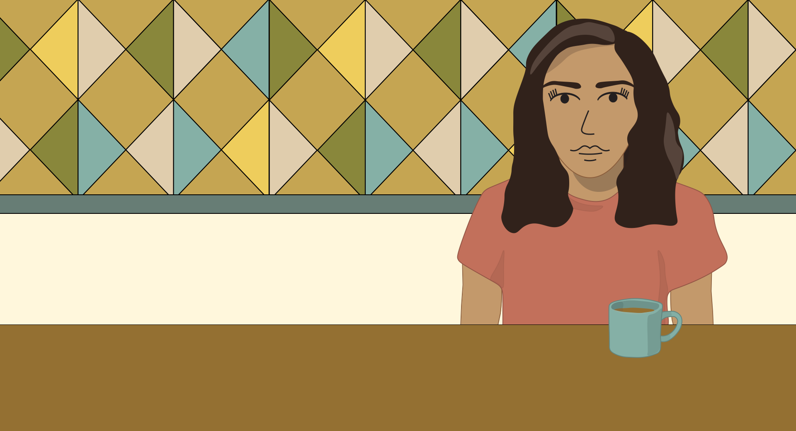
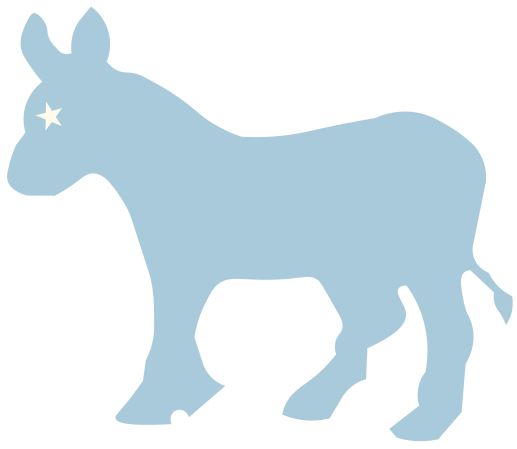
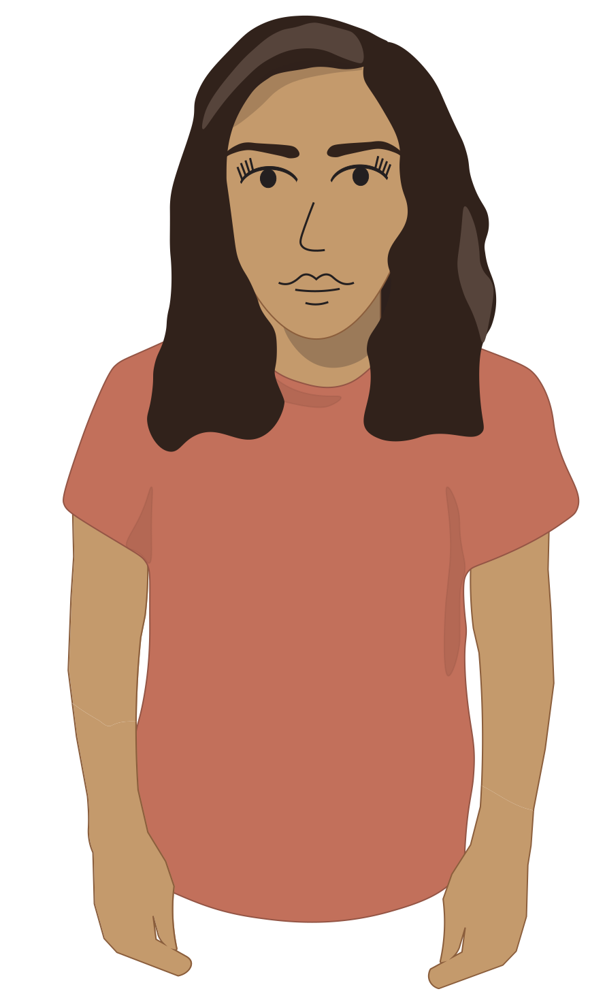
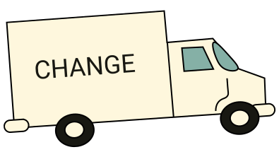
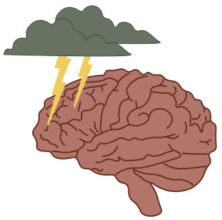
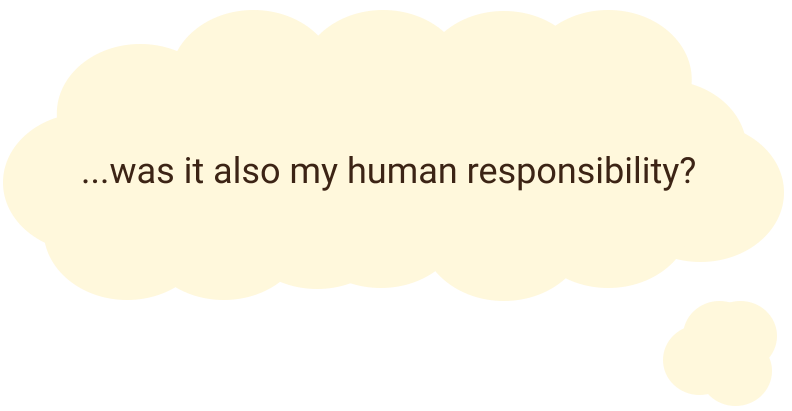
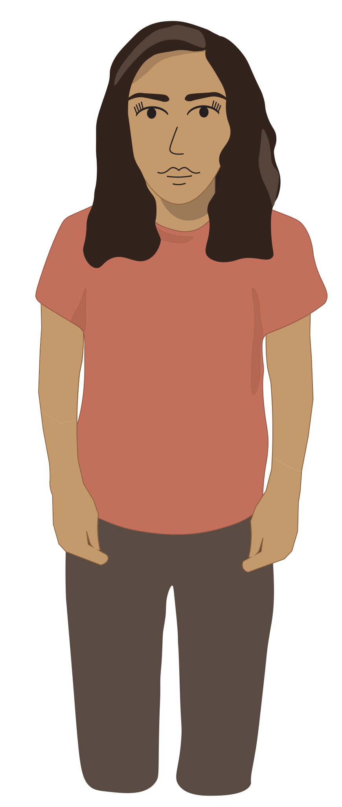

I used to not vote.
I've always felt like politics didn't affect me so why do I need to be concerned?


And it's not like my one little vote even mattered.
Life was already crazy enough.


I thought I wasn’t ever going to vote, but then someone changed everything.
*chat chat*
I early voted because I was scared I might get injured on election day and miss it.
...Why? Why is it that important to you?
Because it's my human duty to do the best I can for the people in this country and the world.

I knew that I cared about people, but I didn't realize that voting was part of doing the best I can for them.
It even impacts me in ways I didn’t realize.
My bubble had to burst because it couldn’t exist while knowing that my inaction was hurting the people I thought I cared about and myself.

To be honest, this revelation didn’t happen overnight. It took me a while to get used to politics and it’s new existance in my life.
but eventually, I registered online
And then I voted.
Early.